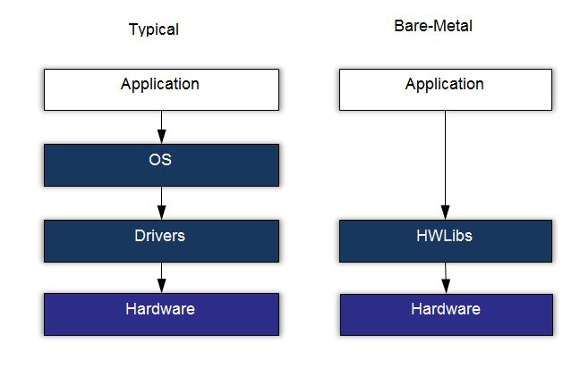

Tutorial 6 - HPS - BlinkLED¶
2020-2
- Material atualizado.
Nesse tutorial iremos compilar um programa para o HPS (Arm Cortex A) que será capaz de controlar os LEDs e ler os botões da placa que estão conectados ao HPS.

Note pelo diagrama anterior extraído do manual do usuário, existem LEDs e botões conectados diretamente ao HPS, e outros conectados a FPGA. Duas são as possíveis abordagens para programarmos o HPS:
baremetal¶
Faríamos um programa que seria executado no ARM HPS sem nenhum sistema operacional. Como detalhado no diagrama:

Nessa maneira a aplicação deve ser capaz de realizar toda a inicialização de HW necessária para que o processador rode corretamente. Se a aplicação for executada sobre um sistema operacional, toda essa etapa é de compilação é responsabilidade do SO. Para isso é aconselhável utilizar a IDE da ARM chamada de DS-5
Sistema operacional¶
Diversas são as alternativas de sistema operacional para embarcado, tudo irá depender da especificação da aplicação. É necessário saber se existem requisitos de tempo real, se sim, deve-se considerar utilizar um RTOS ou algum sistema operacional com essa funcionalidade (existe um patch no kernel do linux que o torna mais ou menos real time). Se é uma aplicação que demanda rede, vídeo, processamento de dados, é de se considerar utilizar um Linux (Android), já que existem ferramentas que facilitam o desenvolvimento de aplicações nessa plataforma (já tem muita coisa pronta e uma comunidade gigantesca).
Com o uso de um sistema operacional a parte referente ao HW é responsabilidade do kernel (ou dos desenvolvedores que estão adequando o kernel ao HW, que é o nosso caso). Diversos são os ganhos de utilizar um sistema operacional do tipo Linux, podemos listar algumas
- Device drivers
- Portabilidade
- Segurança
- Rede
As perdas também são grandes: maior ocupação de memória, maior latências, boot lento...
Software pisca led¶
Iremos compilar um programa e executar no Linux Embarcado. esse programa será executado no user space. Para isso iremos vamos usar a toolchain do tutorial anterior.
Iremos utilizar como base o código exemplo da Terasic disponível no repositório: DE10-Standard-v.1.3.0-SystemCD/Demonstration/SoC/my_first_hps. E crosscopilar esse código para o nosso HPS utilizando o Makefile da pasta.
Sobre o programa¶
Esse programa controla um LED que está conectado na parte do ARM do chip:


Os pinos são controlados pelo periférico GPIO do HPS (ARM), para isso é necessário acessar esse periférico do Linux, isso é feito de maneira similar como fazíamos em Computação Embarcada, um ponteiro que aponta para a região de memória do componente e configura seus registradores:

Em sistemas baremetal podemos simplesmente criar um ponteiro que aponta para a região de memória que desejamos alterar, no linux não podemos fazer isso de forma direta (via userspace) pois os sistemas operacionais trabalham com mapa de memórias onde o endereço 'virtual' não representa o endereço real (lembre de Sys-HW-SW). No linux, para termos acesso a memória real devemos mapear a memória real na virtual usando o comando mmap:
int main(int argc, char **argv) {
void *virtual_base;
int fd;
//...
// map the address space for the LED registers into user space so we can interact with them.
// we'll actually map in the entire CSR span of the HPS since we want to access various registers within that span
if( ( fd = open( "/dev/mem", ( O_RDWR | O_SYNC ) ) ) == -1 ) {
printf( "ERROR: could not open \"/dev/mem\"...\n" );
return( 1 );
}
virtual_base = mmap( NULL, HW_REGS_SPAN, ( PROT_READ | PROT_WRITE ), MAP_SHARED, fd, HW_REGS_BASE );
Agora o ponteiro virtual_base aponta para o periférico GPIO, e podemos manipular esse endereço igual fazíamos em Computação Embarcada.
while(1){
scan_input = alt_read_word( ( virtual_base + ( ( uint32_t )( ALT_GPIO1_EXT_PORTA_ADDR ) & ( uint32_t )( HW_REGS_MASK ) ) ) );
if(~scan_input&BUTTON_MASK)
alt_setbits_word( ( virtual_base + ( ( uint32_t )( ALT_GPIO1_SWPORTA_DR_ADDR ) & ( uint32_t )( HW_REGS_MASK ) ) ), BIT_LED );
else
alt_clrbits_word( ( virtual_base + ( ( uint32_t )( ALT_GPIO1_SWPORTA_DR_ADDR ) & ( uint32_t )( HW_REGS_MASK ) ) ), BIT_LED );
}
Note
Esse Makefile só funciona porque configuramos o nosso bashrc com as variáveis de sistemas que ele utiliza.
Por exemplo, a linha SOCEDS_ROOT ?= $(SOCEDS_DEST_ROOT) usa a variável SOCEDS_DEST_ROOT que foi configurara no tutorial anterior, assim como o arm-linux-gnueabihf-...
Tarefa
- clone o repositório: https://github.com/Insper/DE10-Standard-v.1.3.0-SystemCD
- entre na pasta
Demonstration/SoC/hps_gpio - execute o comando
make
Resultado esperado:
arm-linux-gnueabihf-gcc -g -Wall -Dsoc_cv_av
-I/media/corsi/dados/intelFPGA/20.1/embedded/ip/altera/hps/altera_hps/hwlib/include/soc_cv_av
-I/media/corsi/dados/intelFPGA/20.1/embedded/ip/altera/hps/altera_hps/hwlib/include/
-c main.c -o main.o
arm-linux-gnueabihf-gcc -g -Wall main.o -o my_first_hps
Se obter algo como:
make: arm-linux-gnueabihf-gcc: Command not found
Makefile:19: recipe for target 'main.o' failed
make: *** [main.o] Error 127
É porque você não configurou corretamente o gcc na etapa anterior.
Executando no target¶
Agora basta copiar o binário criado pela compilação para o cartão de memória e testar o nosso programa no target (HPS).
Com o cartão de memória no host (seu computador) copie o arquivo binário: hps_gpio para a pasta: /home/root/ do cartão de memória. Note que existem duas partições, você deve copiar para aquela que possui o root.
Note
Talvez você tenha que copiar usando sudo, no meu caso eu executo:
$ sudo cp hps_gpio /media/corsi/847f4797-311c-4286-8370-9d5573b201d7/home/root
Note
Sempre que manipular um dispositivo de memória externo, é aconselhável fazer um flush do cache para forçar o linux alterar o dispositivo externo, caso contrário a alteração poderá ficar só na memória local ao PC.
$ sync
A função sync é blocante, ficará travada enquanto o linux faz o flush dos dados.
Tarefas
- coloque o SDCARD de volta na fpga
- acesse via terminal e execute o programa (
/home/root/hps_gpio) - os leds da placa devem piscar.
Praticando¶
Para praticar um pouco.
Tarefa
- Faça o programa ler apenas duas vezes o botão, e depois disso termina a aplicação!
Fluxo de desenvolvimento¶
Esse fluxo de desenvolvimento não é dos melhores né? É bom programar no host, mas esse esquema de ter que ficar tirando e colocando cartão de memória, esperar o linux do target subir, logar e testar não faz bem para ninguém. Existem várias soluções para melhorar isso, cada qual com sua vantagem/desvantagem:
- build no próprio target (ruim para o programador, ótimo para dependências, fácil de debugar, lento)
- criar uma vmw arm e compilar nela (bom para o programador, ótimo para dependências, +- fácil de debugar, rápido, difícil de configurar)
- crosscompilar (bom para o programador, ruim para dependências, difícil de debugar, rápido)
Na entrega 4 vamos aprimorar nosso sistema de compilação e testes.